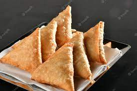

Samosa

A popular Indian snack with a crispy, triangular pastry filled with spiced potatoes and peas.
Ingredients
2 cups all-purpose flour
2 tablespoons oil
1/2 teaspoon salt
2 cups boiled and mashed potatoes
1/2 cup green peas
1 teaspoon cumin seeds
1 teaspoon coriander powder
1/2 teaspoon red chili powder
1/2 teaspoon garam masala
Oil for frying
Recipe
Make a dough with flour, oil, and salt. Let it rest for 30 minutes.
In a separate pan, sauté cumin seeds, add peas, and spices. Mix in mashed potatoes.
Roll out dough, cut into circles, and fold into triangles. Fill with the potato mixture.
Seal edges with water and deep fry until golden brown.